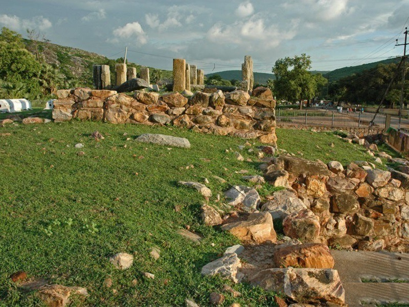
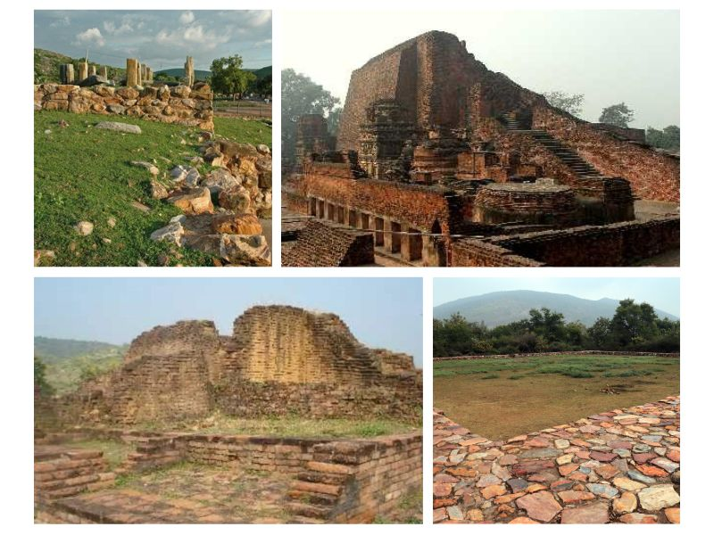

<!DOCTYPE html>
<html lang="en">
<head>
    <meta charset="UTF-8">
    <meta http-equiv="X-UA-Compatible" content="IE=edge">
    <meta name="viewport" content="width=device-width">
    <title>Document</title>
    <script>
        function getPics() {} //just for this demo
        const imgs = document.querySelectorAll('.gallery');
        const fullPage = document.querySelector('#fullpage');
        
        imgs.forEach(img => {
          img.addEventListener('click', function() {
            fullPage.style.backgroundImage = 'url(' + img.src + ')';
            fullPage.style.display = 'block';
          });
        });

        $('img[eng]').addClass('eng').click(function(){
    var src = $(this).attr('src');
    $('<div>').css({
        background: 'RGBA(0,0,0,.5) url('+src+') no-repeat center',
        backgroundSize: 'contain',
        width:'100%', height:'100%',
        position:'fixed',
        zIndex:'10000',
        top:'0', left:'0',
        cursor: 'zoom-out'
    }).click(function(){
        $(this).remove();
    }).appendTo('body');
});
        </script>
</head>
<body>
    
</body>
</html>
<style>
    *{
        margin: 9px 9px;
        font-family: 'Franklin Gothic Medium', 'Arial Narrow', Arial, sans-serif;
    }

   /* Add a black background color to the top navigation bar */
.topnav {
  overflow: hidden;
  background-color: #e9e9e9;
}

/* Style the links inside the navigation bar */
.topnav a {
  float: right;
  display: block;
  color: black;
  text-align: center;
  padding: 14px 16px;
  text-decoration: none;
  font-size: 17px;
}

/* Change the color of links on hover */
.topnav a:hover {
  background-color: #ddd;
  color: black;
}

/* Style the "active" element to highlight the current page */
.topnav a.active {
  background-color: #2196F3;
  color: white;
}

/* Style the search box inside the navigation bar */
.topnav input[type=text] {
  float: right;
  padding: 6px;
  border: none;
  margin-top: 20px;
  margin-right: 16px;
  font-size: 17px;
}

/* When the screen is less than 600px wide, stack the links and the search field vertically instead of horizontally */
@media screen and (max-width: 600px) {
  .topnav a, .topnav input[type=text] {
    float: none;
    display: block;
    text-align: left;
    width: 100%;
    margin: 0;
    padding: 14px;
  }
  .topnav input[type=text] {
    border: 1px solid #ccc;
    
  }
}


#fullpage {
  display: none;
  position: absolute;
  z-index: 9999;
  top: 0;
  left: 0;
  width: 100vw;
  height: 100vh;
  background-size: contain;
  background-repeat: no-repeat no-repeat;
  background-position: center center;
  background-color: black;
}


.headline{
    height: 100px;
    width: 100%;
    font-size: 25px;
}
.image{
    height: 500px;
    width: 100%;
    border: 2px white;
    border-radius: 8px;
    
}
.image ul {
    align-content: baseline;
    
}

.container{
    display: flex;
}
.data{
    overflow: auto;
    height: 400px;
    width: 800px;
    font-size: large;
    /* border: 2px solid black;
    border-radius: 8px; */
}
/* .gallary{
    height: 400px;
    width: 660px;
    border: 2px solid black;
    border-radius: 8px;
} */
.photo1{
    height: 400px;
    width: 60%;
    /* border: 2px solid black;
    border-radius: 8px; */
    float: right; 
}

nav {
    background-color: rgb(187, 186, 186);
    color: black;
  position: relative;
  padding-bottom: 12px;
}
nav.line {
  height: 2px;
  position: absolute;
  bottom: 0;
  margin: 10px 0 0 0;
  background: #d10d34;
}
nav ul {
    
  padding: 0;
  margin: 0;
  list-style: none;
  display: flex;
}
nav ul li {
  margin: 0 40px 0 0;
  opacity: 4;
  transition: all 0.4s ease;
}
nav ul li:hover {
    color: #d10d34;
  opacity: 1;
}
nav ul li.active {
  opacity: 1;
}
nav ul li:last-child {
  margin-right: 0;
}
nav ul li a {
  text-decoration: none;
  color: #000000;
  text-transform: uppercase;
  display: block;
  font-weight: 600;
  letter-spacing: 0.2em;
  font-size: 14px;
}


/* .short{
    position: absolute;
    top: 1500px;
    height: 400px;
    width: 26%;
    border: 2px solid black;
    border-radius: 8px;

} */
.bg{
    bottom: 0px;
    height: 50px;
    width: 100%;
}

.short1{
    position: absolute;
    /* top: 1500px; */
    /* left: 420px; */
    height: 500px;
    width: 36%;
    border: 2px solid black;
    border-radius: 8px;

}
</style>
<body>
    <nav>
        <ul>
          <li class="active"><a href="">Home</a></li>
          <li><a href="">About</a></li>
          <li><a href="">Contact Us</a></li>
        </ul>
    </nav>
    <div class="address">
        <br>
       <h3>Home/Heritage/Ajatshatru Fort</h3> 
    </div>
    <br>
    <div class="headline">
        <h1>Ajatshatru Fort</h1>
    </div>
    <div class="image">
        
    </div>
    <br><br><br><br><br><br>
    <div class="container"> 
    <div class="data">
       <p>We only know about some famous Historical events and their demonstrations.But there are various historical events, monuments and evidences of culture in previous era we must explore.
<br><br>
            The Ajatshatru Fort is a marvel that dates back to thousands of years. It is believed that it was built after its namesake, Emperor Ajatshatru, in the time of the Buddha. It is a favourite for  enthusiasts of history and scholars. It also serves as the perfect spot for photographers to preserve a glimpse of very well-preserved history.Ajatshatru Fort is a historical fort situated at Bangali Para locality of Rajgir town in Bihar. It is one of the most ancient forts in Bihar.
            <br><br>
            Built-in 6th century BC during the rule of King Ajatshatru, The Ajatshatru Fort is a historical monument in Rajgir. It is more than 2500 years old and was considered one of the finest forts ever built in India. It was built in a rectangular-shape with four corners and each corner is covered with stone towers. The fort has a stupa(piller) which is also known as the Ajatshatru stupa spreading across 6.5 sq. m.
            <br><br>
            At present, the fort is now in ruins and hardly seems to be a fort at the first glance. However, it's a great place to visit and a major tourist attraction in Rajgir.
            <br><br>
            One of the major attractions in the Ajatshatru Fort is the Bimbisara Jail, named after Ajatshatru’s father King Bimbisar. King Bimbisar was imprisoned in this jail due to his intense devotion to Buddha. There was also a secret tunnel under the fort whose depth is unknown because of the devastation. You can take photographs here and capture the well-preserved history of the fort. It is a centre of attraction for many history enthusiasts and scholars.
            </p>
    </div>
    <div class="gallary">
        
        <ul>
            <li>Distance From Bhagalpur: 372 Kms</li>
            <li>Via NH19</li>
        </ul>
        <div id="fullpage" onclick="this.style.display='none';"></div>
    </div>
        </div>
        
        <div class="photo1">
            <div class="mapouter"><div class="gmap_canvas"><iframe class="gmap_iframe" width="100%" frameborder="0" scrolling="no" marginheight="0" marginwidth="0" src="https://maps.google.com/maps?width=600&amp;height=500&amp;hl=en&amp;q=Ajatshatru fort&amp;t=h&amp;z=11&amp;ie=UTF8&amp;iwloc=B&amp;output=embed"></iframe><a href="https://capcuttemplate.org/">Capcuttemplate.org</a></div><style>.mapouter{position:relative;text-align:right;width:100%;height:500px;}.gmap_canvas {overflow:hidden;background:none!important;width:100%;height:500px;}.gmap_iframe {height:500px!important;}</style></div>
        </div>

       <div class="short1">
        
       </div>
       <br><br><br><br><br><br><br><br><br><br><br><br><br><br><br><br><br><br><br><br><br><br><br><br><br><br><br>
       <br><br><br><br><br>
</body>
</html>
